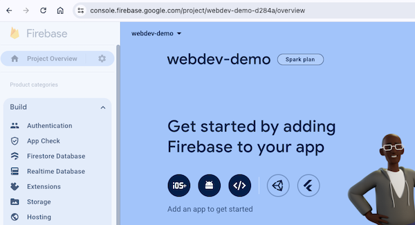
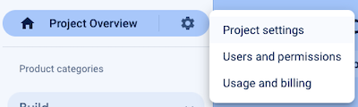
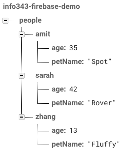
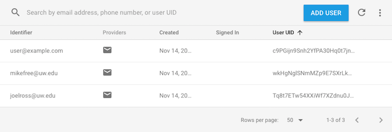
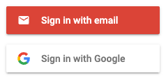

Chapter 20 Firebase
Questo capitolo discute come integrare e usare il web service Firebase in una client-side application (usando React). Firebase e’ un web service che fornisce strumenti e infrastrutture per creare web e mobile apps che salvano data online nel cloud (una “web backend solution”). In pratica, Firebase agisce come un server che puo’ ospitare informazioni per te, cosi’ puoi costruire client-side applications senza dover programmare un web server.
- Firebase e’ di proprieta’ e manutenzione Google, ma funziona perfettamente con il framework React di Facebook.
In particolare, questo capitolo discutera’ le seguenti feature di Firebase:
Il servizio Firebase fornisce anche diversi sistemi di “database”. Questo capitolo descrive come usare il realtime database, che offre un database in stile NoSql semplice: puoi pensarlo come un unico gigantesco JSON object nel Cloud. Firebase fornisce methods che puoi usare per riferirti a questo object e alle sue properties, e fare modifiche all’object. Soprattutto, fornisce la possibilita’ di “ascoltare” le modifiche fatte da altri cosi’ la pagina puo’ aggiornarsi automaticamente in base alle azioni di altri utenti. In pratica puoi creare una data binding tra client e server, cosi’ se aggiorni i data su una macchina, il cambiamento appare automaticamente su un’altra.
Firebase offre anche altre strutture di database. Firestore e’ un altro database NoSQL (document-based), ma piu’ focalizzato su query di fetch una tantum invece del data binding continuo fornito dal realtime database. Questo capitolo si concentra sul Realtime Database come sistema piu’ semplice da imparare e per esercitarsi con il data binding. Firebase Storage si usa per salvare data di dimensioni maggiori (tutto cio’ che non puoi definire in JSON), come immagini o video, ed e’ descritto alla fine del capitolo.
Il servizio Firebase offre anche un sistema client-side per eseguire user authentication, cioe’ permettere agli utenti di “sign in” nella tua application e avere informazioni associate a loro. E’ possibile far registrare gli utenti con email e password, o anche usando un servizio esterno (ad es. “sign in with Google”). Firebase fornisce anche un modo per gestire tutte le interazioni extra associate agli account, come resettare password o confermare email. E tutto questo avviene in modo sicuro dal client-side, senza bisogno di impostare un server aggiuntivo per il lavoro OAuth.
Queste feature significano che Firebase puo’ essere un back-end di riferimento per produrre una client-side app che coinvolge data persistenti (come gli account utente). E il suo free service tier e’ adatto a qualsiasi development app.
Questo capitolo descrive come usare version 9+ della libreria Firebase, rilasciata in August 2021—e in particolare la sua modular API (che permette bundle piu’ piccoli ed efficienti quando usi webpack e React). Nota che, anche se questa versione e’ concettualmente la stessa delle versioni precedenti, la sintassi dei moduli per chiamare e importare functions e’ diversa. Vedi la upgrade guide per dettagli. Fai attenzione quando cerchi esempi e risorse: devono usare la stessa versione che usi tu!
Nota che Firebase fornisce anche Firebase Hosting per fare hosting e servire web applications. Questo e’ particolarmente utile per hostare single-page-applications, come quelle costruite con React Router. Hosting non richiede modifiche al tuo source code, quindi non e’ discusso qui.
20.1 Setting up Firebase
Dato che Firebase e’ un cloud service, devi configurarlo esternamente per poterlo usare nella tua web application. Il setup e la configurazione di Firebase sono gestiti sul sito di Firebase all’indirizzo https://firebase.google.com/, e in particolare nella Firebase Web Console dove puoi gestire i singoli progetti.
Quando sviluppi una Firebase app, tieni sempre aperta la Web Console cosi’ puoi controllare database, user list, ecc!
Creating a Project
Per usare Firebase nella tua web app, devi sign up al servizio. Visita https://firebase.google.com/ e clicca il pulsante “Get Started”. Dovrai fare sign in con un Google account (ad es. un account UW se hai impostato l’integrazione Google). Il sign up ti portera’ alla Firebase Web Console.
Nella Web Console, puoi gestire tutti i tuoi “projects”—uno per ogni application che hai creato (pensa: per repository). Ogni project traccia il proprio database di informazioni, il proprio set di utenti, ecc.
Puoi creare un project cliccando il pulsante “Add Project”. Nella schermata successiva, dovrai dare all’app un nome unico. Dare al project il nome della tua app e’ una buona idea. Questo nome e’ usato internamente dal sistema Firebase; non sara’ necessariamente visibile agli utenti, anche se se usi Firebase Hosting il nome del project fara’ parte dell’URL di default dell’application.
- Recommendation: non abilitare Google Analytics per i tuoi projects!
Dopo aver creato il project, verrai portato alla Web Console per quel project. Questa e’ una web page dove potrai gestire la configurazione del project, gli utenti che si sono registrati e qualsiasi data nel database. In particolare, nota il menu di navigazione a sinistra: lo userai per accedere alle diverse parti del project (Realtime Database per gestire il database e Authentication per gestire gli utenti)—espandi il dropdown “Build” per navigare.

Including Firebase in React
Per usare Firebase in una web app (inclusa una React app), devi aggiungere la libreria Firebase alla web page e specificare alcuni data di configurazione per connetterti al project Firebase corretto.
Dalla pagina della Web Console del project, clicca il pulsante (sembra </> nell’immagine sopra) per aggiungere Firebase a una web app. Questo ti portera’ a una nuova pagina dove dovrai inserire un nickname per l’app e verra’ mostrato del codice JavaScript per caricare la libreria Firebase (assicurati che “Use npm” sia selezionato—non vuoi includere un elemento <script>!).
In una React app integrerai Firebase direttamente nel source code modificando il file index.js:
Per prima cosa, installa la Firebase library usando
npm:# Note: do this in your app's repo (the folder with the `package.json` file) npm install firebasePoi copia lo statement
import, la variablefirebaseConfige la chiamatainitializeApp()nel fileindex.js. Questo specifica quale project Firebase deve connettere la tua web app quando chiami le functions per accedere a Firebase.Nota che dovrai incollare questo codice prima della chiamata
ReactDOM.render(). Il fileindex.jscontiene spesso questi data di configurazione che sono rilevanti per l’app e non per un component specifico.
Adding Collaborators to a Project
L’accesso alla Firebase Web Console e’ fondamentale per chiunque lavori con il backend Firebase in un project. Se lavori con un gruppo di developer, assicurati che tutti i team members abbiano accesso a questa console.
Puoi aggiungere altri team members a un project Firebase selezionando “Users and permissions” dal gear icon di “Project Overview”:

Da li’ puoi cliccare “Add Member” per aggiungere nuovi membri al project.
20.2 Realtime Database
Il web service Firebase fornisce un realtime database per salvare e accedere ai data nel cloud. Puoi pensare a questo database come a un unico gigantesco JSON object nel Cloud che puo’ essere acceduto e modificato simultaneamente da piu’ client—e dato che ogni client legge lo stesso database, le modifiche fatte da un utente saranno viste dagli altri come real-time updates.
Per esempio, potresti avere un database strutturato cosi’:
{
"people" : {
"amit" : {
"age" : 35,
"petName" : "Spot"
},
"sarah" : {
"age" : 42,
"petName" : "Rover"
},
"zhang" : {
"age" : 13,
"petName" : "Fluffy"
}
}
}Questo database object ha una key people che si riferisce a un object, che a sua volta contiene keys che si riferiscono a singoli objects “person” (ognuno con una property age e petName).
Nella Firebase Web Console (sotto la tab “Database” nel menu di navigazione), questa struttura di data viene mostrata cosi’:

- Nota che nella Firebase Web Console puoi modificare questo database direttamente: visualizzare, aggiungere, modificare e cancellare elementi nel JSON. Questo e’ utile per debugging—sia per controllare che il codice modifichi correttamente il database, sia per ripulire eventuali errori.
Anche se il database JSON puo’ avere molti livelli di objects annidati, la best practice e’ cercare di mantenere la struttura il piu’ “flat” possibile ed evitare di annidare troppi data. Questo evita di dover scaricare i “dettagli” annidati per un value se ti serve solo conoscere, ad es., i nomi delle keys. Vedi Structure Your Data per piu’ dettagli ed esempi.
Setting Up the Database
Per abilitare il realtime database per il tuo project, vai alla pagina della console del database e clicca il pulsante “Create Database”.
Assicurati di creare il Realtime Database, non il Firestore Database!
Dopo aver selezionato la local region, ti verra’ chiesto di impostare le Security Rules. Scegli di partire in test mode per iniziare subito; vedi la sezione sotto per maggiori dettagli sulle security rules.
Security Rules
Dato che il database Firebase e’ solo un gigantesco JSON object nel cloud e puo’ essere usato da un sistema client-side, tecnicamente chiunque puo’ accedervi. Ogni elemento del JSON object e’ accessibile via AJAX requests (che vengono inviate tramite functions firebase).
Per limitare quali informazioni possono accedere i client (read o write dei values nel JSON), Firebase ti permette di definire security rules che specificano quali utenti possono accedere a quali elementi. Per esempio, puoi fare in modo che solo authenticated users possano aggiungere nuove entries nel database, o che solo utenti specifici possano aggiornare entries specifiche (ad es. i commenti che hanno scritto su un blog).
- Di default, nessuno puo’ accedere o modificare i data (in locked mode). Se scegli di avviare il project in test mode, allora chiunque potra’ accedere o modificare l’intero database per un periodo di tempo limitato.
Per modificare o configurare le security rules, vai alla tab “Rules” della pagina Realtime Database nella Firebase Web Console. Puoi modificare le rules editando i data JSON mostrati; ricordati di cliccare “Publish” quando hai finito di editare.
Le Firebase Security Rules sono definite in JSON usando uno schema particolare (e un po’ awkward). In pratica, dentro la property "rules" specifichi un JSON tree che rispecchia la struttura del database. Ma invece di avere un value per le keys del database, specifichi un object con le properties ".read" e ".write". I values di queste properties sono espressioni booleane che indicano se l’utente corrente puo’ leggere (access) o scrivere (modify) quel value. Per maggiori dettagli su come scrivere le rules, come gestire l’autorizzazione degli utenti (solo certi utenti possono read/write) o la data validation (assicurare che i data siano di un certo tipo), vedi la documentazione ufficiale.
Reference ai dati
Per iniziare a lavorare con il tuo database, devi ottenere una reference a quel value nel database.
Inizi ottenendo una reference al database stesso, usando la function getDatabase() fornita dal database module firebase/database di Firebase:
//importa la function dal modulo realtime database
import { getDatabase } from 'firebase/database';
//ottieni una reference al servizio database
const db = getDatabase();Importante: il value db nell’esempio non e’ una copia dei data ne’ del database stesso! E’ solo un reference pointer a dove quel database risiede—puoi pensarlo come un “URL” del database.
- La function
getDatabase()e’ un semplice accessor singleton che gira in tempo costante; e’ best practice chiamarla nello scope funzionale in cui ti serve riferirti al database. Non devi passarla in giro come prop, ne’ provare a creare una variabledbglobale o “top level”. Richiama la function quando ti serve accedere al database da uno scope diverso.
Per modificare specifici values nel database, devi ottenere una reference a quel value. Lo fai usando la function ref(), passando la reference al database e il “path” (una string) al value nel JSON del database:
import { getDatabase, ref } from 'firebase/database';
//ottieni una reference al servizio database
const db = getDatabase();
//ottieni una reference alla property "people" nel database
const peopleRef = ref(db, "people")
//ottieni una reference alla property "sarah" dentro la property "people" nel database
//simile a `database.people.sarah` usando la dot notation
const sarahRef = ref(db, "people/sarah");Ancora una volta, queste reference non sono i data! Sono solo reference pointer a dove risiedono i data—come l’“URL” di quel value.
I “path” ai values annidati nel database sono scritti in una “path notation” stile URI, dove ogni key annidata e’ indicata con uno slash / (invece del . della dot notation che useresti nel formato JSON). Quindi "people/sarah" si riferisce alla key sarah dentro la key people nel database; "people/sarah/pet" si riferisce alla key pet dentro la key sarah dentro la key people—la posizione nel database con il value "Rover" nell’esempio sopra.
Dato che questo path e’ solo una string, puoi usare la string concatenation per costruire il path al value specifico che vuoi referenziare (ad es. se vuoi lavorare solo con il value di una persona specifica):
//nome della variable da usare per accedere
const personName = "Ada";
//accedi alla property "Ada" dentro la property "people" nel database
const personOfInterestRef = ref(db, "people/"+personName);In alternativa, puoi usare la function child() per ottenere una reference a uno specifico elemento “child” nel database:
import { ref, child } from 'firebase/database';
//equivalente all'esempio sopra
//ottieni una reference alla property "people" nel database
const peopleRef = ref(db, "people")
//ottieni una reference alla property "sarah" dentro il value referenziato di "people"
const sarahRef = child(peopleRef, "sarah")In generale, vuoi lavorare con il subset di data piu’ piccolo possibile. Quindi e’ meglio ottenere una reference a "person/sarah" se devi solo leggere o scrivere quel value, invece di ottenere la reference all’intero "people" e poi leggere/scrivere la key sarah al suo interno.
Writing Data
Puoi modificare i values nel database usando la function set(). Questa function prende due argomenti: una database reference e il nuovo value che vuoi assegnare a quella location nel database:
//aliasa la function `set` come `firebaseSet`
import { ref, set as firebaseSet } from 'firebase/database'
//ottieni una reference a dove e' memorizzata l'eta' di sarah nel database
const sarahAgeRef = ref(db, "people/sarah/age");
//cambia l'eta' di Sarah a 43 (buon compleanno!)
const newValueForSarahAge = 43;
//assegna il nuovo value nel database
firebaseSet(sarahRef, newValueForSarahAge);Questo cambiera’ il value nel database a "people/sarah/age" in 43.
Nota che in questo esempio uso la keyword as per aliasare la function set quando la importo, chiamandola firebaseSet. Questo e’ per chiarezza, dato che “set” e’ un nome troppo generico per una function.
Nota che, come per i normali JSON objects, puoi anche “set”are values per entries del database che non esistevano prima—non devi “dichiarare” un value nel database in anticipo.
//una reference all'entry "people" nel database
const peopleRef = ref(db, "people")
//una reference a una location senza value definito
const adaRef = ref(peopleRef, "ada");
//imposta un object in quella location nel database
firebaseSet(adaRef, {age: "206", pet: "Charlie"})Firebase fornisce anche un metodo equivalente update(), che “mergea” i cambiamenti nel value esistente a quella reference. Questo ti permette di update() una reference passando un object con alcune properties da modificare, mantenendo le properties esistenti (invece di sostituire l’intero value).
Infine, nota che il metodo set() restituisce una Promise. Quindi puoi usare .then() (o await) per eseguire statements dopo che il database e’ stato aggiornato, e puoi intercettare eventuali errori che possono verificarsi durante l’update di un value. Questo e’ particolarmente utile per debugging, ma anche per fornire feedback all’utente.
const sarahPetRef = ref(db, "people/sarah/pet");
//cambia il pet di Sarah
firebaseSet(sarahPetRef, "Sparky")
.then(() => console.log("dati salvati con successo!"))
.catch(err => console.log(err)); //logga eventuali errori per debuggingListening for Data Changes
Dato che il database di Firebase e’ pensato per accesso realtime (che puo’ cambiare nel tempo), leggi i data e stabilisci data binding registrando un event listener per ascoltare i cambiamenti nel database. In pratica, qualsiasi modifica ai data causa un “database change event” che attiva il listener, permettendoti di accedere ai data aggiornati.
Registri un database change listener usando la function onValue(). Questa function prende come argomenti una database reference (il value di cui vuoi ascoltare i cambiamenti) e una callback function che verra’ eseguita in risposta all’event (simile alla function DOM addEventListener()):
import { ref, onValue } from "firebase/database"
//ottieni una reference a una particolare posizione di value nel database
const amitRef = ref(db, 'people/amit');
//registra un listener per i cambiamenti in quella location di value
onValue(amitRef, (snapshot) => {
const amitValue = snapshot.val();
console.log(amitValue); //=> ad es., { age: 35, petName: "Spot" }
//puoi fare altro con amitValue (ad es. assegnarlo a una state variable)
});Alla callback function verra’ passato come parametro lo snapshot piu’ recente del value di data nella location ascoltata. Questo e’ un wrapper attorno al JSON tree del database (che ti permette di navigarlo, ad es. con child()). Di solito, vorrai convertire lo snapshot in un vero object JavaScript chiamando il metodo .val().
Il listener si attiva ogni volta che cambia un child node della reference target. Quindi anche se viene aggiornato solo people/amit/pet, il listener sopra si attivera’.
Importante: dato che questo listener coinvolge accesso di rete e puo’ attivarsi per tutta la vita dell’application, in una React app dovrai registrarlo dentro un effect hook. La “cleanup function” dell’effect hook dovra’ anche rimuovere il listener—altrimenti avrai un memory leak e potresti avere errori se il component viene rimosso (ad es. cambiando route). La function onValue() restituisce una nuova function che puo’ essere usata per “unregister” il listener:
function MyComponent(props) {
//effect hook
useEffect(() => {
const db = getDatabase();
const amitRef = ref(db, "people/amit");
//restituisce una function che fara' "unregister" (spegne) il listener
const unregisterFunction = onValue(amitRef, (snapshot) => {
const amitValue = snapshot.val();
//...imposta la state variable, ecc...
})
//function di cleanup quando il component viene rimosso
function cleanup() {
unregisterFunction(); //chiama la function di unregister
}
return cleanup; //la callback dell'effect hook restituisce la function di cleanup
})
}Nota che e’ possibile leggere un singolo value una sola volta (senza registrare un listener) usando il metodo get(). Questo metodo restituisce una promise che conterra’ lo snapshot letto (una volta scaricato). Tuttavia, il Realtime Database e’ pensato e ottimizzato per data binding e notifications. Quindi dovresti praticamente sempre usare onValue() per leggere i data dal database. Se ti trovi a voler leggere un singolo value una sola volta, non stai pensando correttamente al realtime database!
Firebase Arrays
Quando lavori e memorizzi data nel cloud, spesso vuoi organizzare quei data in liste usando arrays. Tuttavia, Firebase non supporta direttamente gli arrays: il JSON object nel cloud contiene solo objects, non arrays! Questo perche’ Firebase deve supportare concurrent access: piu’ persone devono poter accedere ai data nello stesso momento. Ma dato che gli arrays si accedono per index, questo puo’ creare problemi se due persone provano a modificare l’array allo stesso tempo.
- Il problema e’ che con un array, un numero di index non si riferisce sempre allo stesso elemento! Per esempio, se hai un array
['a', 'b' 'c'], l’index1inizialmente si riferisce a'b'. Tuttavia, se aggiungi un elemento all’inizio dell’array, improvvisamente l’index1si riferisce a'a'. Quindi, se un utente stava provando a modificare'b'prima che la sua macchina fosse consapevole del cambiamento, potrebbe finire per modificare il value sbagliato quando chiede di cambiare il value all’index1! Questo bug e’ un esempio di race condition, che puo’ verificarsi quando due processi modificano i data concurrently (allo stesso tempo).
Per evitare questo problema, Firebase tratta tutte le data structures come Objects, cosi’ ogni value nel JSON tree ha una key unique. In questo modo ogni client modifica sempre il value che si aspetta. Tuttavia, Firebase offre un modo per trattare gli Objects come arrays, tramite la function push()(https://firebase.google.com/docs/reference/js/firebase.database.Reference#push) che aggiunge un value a un object con una auto-generated key.
import { getDatabase, ref, push as firebasePush } from 'firebase/database';
const db = getDatabase;
const tasksRef = ref(db, "tasks"); //un object di task
firebasePush(taskRef, {description:'First things first'} ) //aggiungi un task
firebasePush(taskRef, {description:'Next things next'} ) //aggiungi un altro taskQuesto produrra’ un database con una struttura:
{
"tasks" : {
"-KyxgJhKOVeAj2ibPxrO" : {
"description" : "First things first"
},
"-KyxgMDJueu17348NxDF" : {
"description" : "Next things next"
}
}
}Nota come la property tasks sia un Object (anche se abbiamo “pushato” elementi dentro), e ogni “task” ha una auto-generated key (basata sul timestamp in cui e’ stato pushato). Puoi comunque interagire con tasks come se fosse una lista simile a un array, ma invece di usare un value da 0 a length come index, userai una “key” generata come index.
Always usa la function push() per far gestire automaticamente a Firebase i data arrays. Never provare a creare manualmente un “array” dando ai values keys “0”, “1”, “2” ecc.
Gli snapshots Firebase supportano una function forEach() che puoi usare per iterare gli elementi, permettendoti di fare loop sugli elementi di un array. Tuttavia, se vuoi fare qualcosa di piu’ complesso (come map(), filter() o reduce()), ti serve un vero array. Il modo migliore per ottenerlo e’ usare Objects.keys() su snapshot.val() per ottenere un array di keys, e poi puoi iterare/mappare quelle keys in un array di values (accedendo a ogni elemento dell’“array” con la bracket notation).
//`tasksSnapshot` e' uno snapshot dell'"array" `tasks`
const allTasksObject = tasksSnapshot.val(); //converti lo snapshot in value
//un array delle keys nell'object ["-KyxgJhKOVeAj2ibPxrO", "-KyxgMDJueu17348NxDF"]
const allTasksKeys = Object.keys(allTasksObject);
//mappa l'array di keys in un array di task
const allTasksArray = allTasksKeys.map((key) => {
const singleTaskCopy = {...allTasksObject[key]}; //copia l'elemento a quella key
singleTaskCopy.key = key; //salva localmente la key come "id" per dopo
return singleTaskCopy; //l'object trasformato da salvare nell'array
});
allTasksArray.map((taskObject) => { ... })Nota che quando fai loop su un “array”, ogni elemento viene gestito separatamente dalla sua key (allo stesso modo in cui un forEach() ti permette di lavorare con gli elementi separatamente dal loro index). Ma dato che potresti aver bisogno di quella key come identificatore per fare ref() e modificare l’elemento JSON piu’ avanti, assicurati di “salvare” la key nell’object mentre lo processi come property locale aggiuntiva. Questo non modifica il value nel database, solo la variable locale su cui sta lavorando il codice. Non perdere la key!.
20.3 Autenticazione utenti
Firebase fornisce la possibilita’ di authenticate gli utenti: permettere alle persone di sign up nella tua application e poi verificare che siano chi dicono di essere (ad es. hanno fornito la password corretta). Firebase supporta diverse forme di authentication: gli utenti possono fare sign up con email e password, log in con un social media service come Google o Facebook, o anche autenticarsi “anonymously” (cosi’ puoi almeno tenere traccia di persone diverse anche se non sai chi sono).
Per supportare la user authentication, devi abilitare questa feature nella Firebase Web Console. Clicca il link “Authentication” nel menu laterale sotto la categoria Build per andare alla pagina di gestione authentication, poi scegli “Get started”. Nella tab “Sign-In Method”, puoi scegliere quali forme di authentication abilitare.
Per esempio, clicca l’opzione “Email/Password” e poi attiva lo switch per “Enable” quel metodo. Ricordati di salvare i cambiamenti!
Ogni metodo di sign-in usa quello che si chiama “Provider”—un servizio che fornisce le informazioni per verificare se l’utente e’ chi dice di essere. Il check email/password di Firebase e’ un possibile Provider; Google e’ un altro Provider; ecc. Puoi abilitare piu’ Providers, ciascuno dei quali puo’ autenticare gli utenti (cioe’ permettere loro di sign in con le credenziali rilevanti).
Nota che potrai usare questa pagina per vedere e gestire gli utenti che si sono registrati con il tuo project Firebase. Qui puoi vedere se gli utenti sono stati creati correttamente, cercare il loro User UID per debugging o eliminare utenti dal project:

Accesso con FirebaseUI
E’ possibile chiamare functions fornite da Firebase per creare e loggare utenti. Tuttavia, questo richiederebbe implementare il “log in form” da soli—e supporterebbe facilmente solo l’opzione Email/Password.
Invece, un approccio migliore e’ usare la libreria FirebaseUI, gestita da Firebase. Questa libreria fornisce un set di elementi UI predefiniti come un “login form”, inclusi quelli che supportano diversi metodi di authentication.

Esistono diverse librerie FirebaseUI per piattaforme diverse; in passato per React si usava firebaseui-web-react. Tuttavia, a novembre 2022 questa libreria non e’ stata aggiornata per funzionare con l’ultima versione di React (React 18), e sembra essere stata abbandonata invece di applicare il fix necessario. Ci sono due possibili workaround:
Puoi installare una versione della libreria aggiornata da Gabriel Villenave (che non e’ stata ancora accettata come pull request):
# installa la libreria dalla command line npm install https://gitpkg.now.sh/gvillenave/firebaseui-web-react/dist --legacy-peer-deps(Il flag
legacy-peer-depspermette al package di installarsi con React 19, anche se e’ indicato compatibile solo fino alla versione 18).Conferma che il file
package.jsonabbia la dependency corretta:"react-firebaseui": "https://gitpkg.now.sh/gvillenave/firebaseui-web-react/dist"Puoi installare la versione non-React della libreria (
firebaseui) e poi definire manualmente il Component necessario (StyledFirebaseUI):npm install firebaseuiCrea il file
StyledFirebaseAuth.txsdefinito in questo commento.
La libreria React FirebaseUI fornisce un Component chiamato <StyledFirebaseAuth>, che puoi renderizzare nella pagina come qualsiasi altro Component. Puoi pensare a questo Component come al “login form”. Un esempio completo di come si usa questo Component e’ mostrato sotto, seguito da una spiegazione.
//importa functions e variables di auth da Firebase
import { getAuth, EmailAuthProvider, GoogleAuthProvider } from 'firebase/auth'
//importa il component -- scegline uno!
import StyledFirebaseAuth from 'react-firebaseui/StyledFirebaseAuth'; //install option 1
import StyledFirebaseAuth from './StyledFirebaseAuth'; //install option 2
//un object di valori di configurazione
const firebaseUIConfig = {
signInOptions: [ //array di opzioni di sign in supportate
//l'array puo' includere solo "Provider IDs", o objects con gli ID e le options
GoogleAuthProvider.PROVIDER_ID,
{ provider: EmailAuthProvider.PROVIDER_ID, requiredDisplayName: true },
],
signInFlow: 'popup', //non fare redirect per autenticare
credentialHelper: 'none', //non mostrare il selettore email
callbacks: { //callbacks di "lifecycle"
signInSuccessWithAuthResult: () => {
return false; //non fare redirect dopo l'autenticazione
}
}
}
//il component React da renderizzare
function MySignInScreen() {
const auth = getAuth(); //accedi all'"authenticator"
return (
<div>
<h1>La mia app</h1>
<p>Per favore fai sign-in:</p>
<StyledFirebaseAuth uiConfig={firebaseUIConfig} firebaseAuth={auth} />
</div>
);
}Ci sono alcuni passi per usare questo Component:
Il
<StyledFirebaseAuth>richiede una propuiConfig, che e’ un object contenente i valori di configurazione per il login form (l’object ha properties specifiche che corrispondono alle opzioni di configurazione). L’object di config e’ di solito definito come constant globale.L’opzione di configurazione piu’ importante e’
signInOptions, che elenca i diversi authentication providers supportati (quali opzioni devono apparire nel login form). Gli ID di questi provider sono importati dalla libreria'firebase/auth'—anche se sono values numerici, non functions.Altre opzioni comuni/utili sono mostrate nell’esempio; per la lista completa vedi la documentazione firebaseui-web.
Il
<StyledFirebaseAuth>richiede anche una propfirebaseAuth, che e’ una reference al servizio “authenticator”—quello che gestisce il processo di login e logout dell’utente. Puoi ottenere questo value tramite la functiongetAuth()fornita da'firebase/auth'(simile a come accedi al Realtime Database tramitegetDatabase()).Nota che, come per
getDatabase(), l’authenticator e’ un value singleton—puoi chiamaregetAuth()da piu’ modules/files/scopes senza problemi. Non devi passarlo come prop o dichiararlo come constant “top-level”.
Con questo Component, gli utenti potranno fare “log in”, ma vedi la sezione Managing the User sotto. Potrai vedere una lista di utenti che si sono collegati alla tua app nella Firebase Web Console. Nota in particolare che puoi vedere il loro uid (unique identifier), che e’ usato per distinguere tra utenti. (Non puoi usare le email come identificatori, perche’ chi fa log in con Facebook non fornira’ il proprio indirizzo email!).
Pro-tip: non servono email reali per i test. Prova a@a.com, b@a.com, c@a.com, ecc. Allo stesso modo, password va bene per testare le password (ma non farlo mai nella vita reale!)
La Firebase Web Console mostra la “user list”—ma, importantemente, non e’ la stessa cosa del Realtime Database. La user list contiene informazioni molto limitate: l’authentication provider, un “display name” e forse un “photo url” (ad es. dove trovare un avatar). Ma non puoi salvare informazioni aggiuntive nel “user database”—non immagini profilo, non nomi o pronomi preferiti, non pesci preferiti. Qualsiasi informazione specifica dell’utente va salvata nel Realtime Database, di solito usando una “key” che e’ l’uid dell’utente. Per esempio, il tuo Realtime Database potrebbe salvare dati come:
{
"userData" : {
"userId1" : {
"pronouns" : "they/them",
"favoriteFish" : "sea bass"
},
"userId2" : {
"pronouns" : "he/him",
"favoriteFish" : "cuttle fish"
}
}
}Poi puoi accedere ai data dell’utente usando lo stesso processo di qualsiasi altro data nel realtime database, ascoltando la reference "userData/"+userId.
Per fare sign out di un utente, puoi usare un’altra function built-in di Firebase: signOut():
import { getAuth, signOut } from 'firebase/auth';
const auth = getAuth();
signOut(auth)
.catch(err => console.log(err)); //logga eventuali errori per debuggingNota che il metodo signOut() restituisce una Promise, quindi puoi fare .catch() e mostrare eventuali errori.
Managing the User
Anche se FirebaseUI fa il log in dell’utente, devi fare ulteriore lavoro per far sapere alla tua app chi e’ l’utente loggato.
L’authenticator (da getAuth()) tiene traccia di quale Firebase User e’ attualmente loggato—e questa informazione persiste anche dopo che il browser e’ chiuso. Questo significa che ogni volta che ricarichi la pagina, l’authenticator eseguira’ automaticamente l’authentication e “re-login” dell’utente.
Il modo consigliato per determinare chi e’ attualmente logged in e’ registrare un event listener che ascolta gli eventi quando lo “state” dell’authentication cambia (ad es. un utente fa log in o log out). Questo event avviene quando la pagina si carica e Firebase determina che un utente si e’ registrato in precedenza (viene impostato lo “initial state”), oppure quando un utente fa log in o log out. Puoi registrare questo listener usando la function onAuthStateChanged() di Firebase:
//importa le functions
import { getAuth, onAuthStateChanged } from 'firebase/auth'
const auth = getAuth();
onAuthStateChanged(auth, (firebaseUser) => {
if(firebaseUser){ //firebaseUser definito: e' loggato
console.log('loggato', firebaseUser.displayName);
//fai qualcosa con firebaseUser (ad es. assegnarlo a una state variable)
}
else { //firebaseUser e' undefined: non e' loggato
console.log('log out');
}
});La function onAuthStateChanged() prende due argomenti: l’authenticator e una callback function che verra’ eseguita ogni volta che lo “authentication state” cambia (ad es. quando l’utente fa log in o log out). La callback ricevera’ un object che rappresenta il “Firebase User”. Questo object contiene properties sull’utente, tra cui:
uid, che e’ lo unique id dell’utentedisplayName, che e’ il nome visualizzabile dell’utente indipendente dal provider
La pratica piu’ comune e’ prendere questo object e assegnarlo a una variable piu’ globale, come una state variable in un component React (ad es. setCurrentUser(firebaseUser)).
Se l’utente ha fatto “log out”, il value firebaseUser passato sara’ null; questa informazione puo’ essere salvata nella state variable React.
Importante: dato che questo listener coinvolge accesso di rete e puo’ attivarsi durante la vita dell’application, in una React app dovrai registrarlo dentro un effect hook. La “cleanup function” dell’effect hook dovra’ anche rimuovere il listener. La function onAuthStateChanged() restituisce una nuova function che puo’ essere usata per “unregister” il listener:
function MyComponent(props) {
//effect hook
useEffect(() => {
const auth = getAuth();
//restituisce una function che fara' "unregister" (spegne) il listener
const unregisterFunction = onAuthStateChanged(auth, (firebaseUser) => {
//gestisci il cambio di stato dell'utente
if(firebaseUser){
//...
}
})
//function di cleanup quando il component viene rimosso
function cleanup() {
unregisterFunction(); //chiama la function di unregister
}
return cleanup; //la callback dell'effect hook restituisce la function di cleanup
})
}Firebase React Hooks
Nei sistemi React e’ comune renderizzare contenuti diversi a seconda che l’utente sia loggato o meno. Questo puo’ essere fatto con conditional rendering, o con una “protected route” come descritto in Client-Side Routing.
Tuttavia, Firebase impiega alcuni secondi per autenticare un utente quando la pagina si carica per la prima volta. Quindi il conditional rendering spesso deve gestire 3 casi: quando l’utente e’ loggato, quando l’utente non e’ loggato, e quando lo user status e’ “loading” e l’app non ha ancora finito di controllare.
Anche se esistono workaround un po’ goffi (ad es. usare un value speciale nello state per indicare che un utente e’ in “loading”), questa situazione e’ abbastanza comune da poter usare soluzioni implementate da altri. Una di queste e’ la libreria firebase-react-hooks. Questa libreria fornisce un hook semplice (come useState o useParams) che ti permette di accedere allo user status. In particolare, l’hook useAuthState implementa per te il listener dello authentication state:
import { getAuth } from 'firebase/auth';
import { useAuthState } from 'react-firebase-hooks/auth';
function MyComponent(props) {
const auth = getAuth();
const [user, loading, error] = useAuthState(auth);
if(loading){ //ancora in attesa
return <p>Initializing user</p>
}
if(error) { //errore durante il log in
return <p>Error: {error}</p>
}
if(user) { //user definito, quindi loggato
return <p>Benvenuto {user.displayName}</p>
} else { //user e' undefined
return <p>Per favore fai sign in</p>
}
//...
}Questo hook restituisce un array di 3 values (destructured nell’esempio sopra), indicando l’utente corrente (o null se non c’e’), se lo auth state e’ ancora in loading, e se c’e’ stato un errore.
Anche se usare questa libreria non e’ necessario, e’ un buon esempio di come l’architettura di React permetta librerie esterne che riducono il boilerplate code.
20.4 Firebase Storage
Il Realtime Database di Firebase persiste data JSON: quindi alla fine solo strings, numbers e booleans (anche se quei values sono organizzati in objects). Se vuoi persistere file di data—come musica, video, pdf, ecc—devi usare un servizio diverso chiamato Firebase Storage. Storage e’ progettato per salvare file piu’ grandi invece di data types primitivi. Alla fine funziona in modo abbastanza simile al realtime database, ma senza data binding.
A ottobre 2024, Firebase richiede un piano “pay-as-you-go” per creare un storage bucket. Questo richiede di fornire informazioni di carta di credito. Gli studenti del corso INFO 340 non devono iscriversi a questo piano; parla con il docente per dettagli.
Con questo piano hai fino a 5 GB di storage gratis (con 1 GB/giorno di download consentito). Sono circa 5000 immagini hi-res, 1000 file musicali o circa 20 ore di video compresso. Questo significa che il free storage service funziona benissimo per la maggior parte delle versioni di sviluppo delle media applications—anche se potresti esaurire lo spazio rapidamente se lavori con video, soprattutto in fase di test. Considera sempre la quantita’ di data che dovrai salvare prima di scegliere un cloud storage service.
Per usare Firebase Storage, devi abilitare questa feature nella Firebase Web Console. Clicca il link “Storage” nel menu laterale sotto la categoria Build per andare alla pagina di gestione, poi scegli “Get started”. Come per il realtime database, dovrai scegliere le security rules (probabilmente in test mode per lo sviluppo). Quando ti viene chiesto un Cloud Storage bucket location, scegli qualcosa di vicino per velocizzare l’accesso un po’, ma per la maggior parte dei progetti studenteschi non importa molto.
Dopo aver configurato Storage, puoi usare la Firebase Web Console per vedere e gestire i file caricati (inclusa la loro eliminazione, se vuoi).
File Inputs
Per permettere a un utente di caricare un file su Storage, l’utente deve prima scegliere quale file vuole salvare. Il modo corretto per farlo e’ usare un elemento <input> di tipo "file":
<input type="file">Questo elemento funziona come gli altri <input> che hai usato (di solito con il type di default "text"). Ma invece di fornire un’interfaccia per inserire una string come value, l’input fornisce un’interfaccia per scegliere un file dal sistema operativo.
Questo e’ un <input> come qualsiasi altro, quindi in React dovresti usare una state variable per controllarlo!
Dopo che l’utente sceglie un file, puoi accedere ai file scelti tramite la property .files dell’elemento <input>—simile alla property .value usata con i <input> di default. Nota che la finestra di scelta file del sistema operativo puo’ permettere di scegliere piu’ file (o nessuno!); vorrai controllare questo quando rispondi ai cambiamenti dell’input:
//una event handler function che risponde al cambio in un `<input type="file">`
const handleChange = (event) => {
//event.target e' l'elemento <input>
//controlla, ad es., che l'utente abbia scelto almeno 1 file e che il file esista davvero
if(event.target.files.length > 0 && event.target.files[0]) {
const chosenFile = event.target.files[0]; //il primo file scelto
//... fai qualcosa con quel value, ad es. salvarlo nello state di React
}
}Nota che chosenFile sara’ un value di tipo File, che ha i propri methods e properties. In modo critico, il value File e’ in realta’ solo una reference a una location nel sistema operativo del computer; se il file viene spostato o rinominato allora File puntera’ a qualcosa senza size, quindi non potrai caricarlo.
Uploading Files
Una volta che hai il File che l’utente vuole caricare, puoi caricare quei data su Firebase usando un metodo simile a come fai set dei data nel realtime database.
Per prima cosa, devi ottenere una reference alla location in Storage dove vuoi caricare il file. Lo fai usando la function ref() dalla libreria firebase/storage:
import {getStorage, ref as storageRef } from 'firebase/storage';
//ottieni una reference al servizio storage
const storage = getStorage();
//ottieni una reference a dove andra' il file nello storage
const fileRef = storageRef(storage, "path/to/myfile.png");Importante: questa e’ una function ref() diversa da quella usata con il realtime database! Non sono intercambiabili. Per questo motivo, puoi aliasare il ref di storage come, ad es., storageRef per usarle entrambe nello stesso module.
La function ref() prende come argomenti la reference al servizio di storage e una string che rappresenta il “file path” per il nuovo file—cioe’ dove andra’ nello Storage bucket. Scrivi questa string come qualsiasi altro relative file path; include sia eventuali directory intermedie sia il nome del file risultante. Qualsiasi directory inclusa nel path verra’ creata quando il file viene caricato (non deve esistere in precedenza), e se un file esiste gia’ in quella location, verra’ sovrascritto. Assicurati di includere l’estensione del file quando lo nomini (e che l’estensione corrisponda al file type reale!).
Dopo aver ottenuto la reference alla location del file nello storage, puoi usare la function uploadBytes() per caricare il file:
import {getStorage, ref as storageRef, uploadBytes } from 'firebase/storage';
const storage = getStorage();
const fileRef = storageRef(storage, "path/to/myfile.png");
uploadBytes(fileRef, myFile)
.then(() => console.log("file caricato con successo!"))
.catch(err => console.log(err)); //logga eventuali errori per debuggingLa function uploadBytes() e’ asynchronous (puo’ richiedere tempo per caricare file grandi!) e restituisce una Promise che puoi usare per reagire quando il file ha finito di caricarsi o per catturare e gestire gli errori.
Dopo che un file e’ stato caricato, Firebase gli assegna un URL pubblico (con il solito protocollo https://) da cui siti e utenti possono accedervi. Questo URL pubblico e’ diverso ed e’ costruito a partire dal path ref specificato, e puo’ variare in base ai parametri di storage usati da Firebase. Quindi, per ottenere l’URL risultante di questo file (ad es. per mostrarlo di nuovo all’utente), devi richiederlo a Firebase. Lo fai usando un’altra function chiamata getDownloadURL(). La function prende come argomento il ref del file e interroga Firebase per l’URL pubblico del file.
Ma interrogare Firebase e’ un’operazione di rete, quindi richiede tempo… Per questo getDownloadURL() e’ asynchronous e non restituisce l’URL vero, ma una Promise di quell’URL; devi attendere che la promise si risolva per accedere alla string URL. Dato che il caricamento del file e l’ottenimento dell’URL pubblico sono entrambe functions asincrone che restituiscono Promises, questa e’ una buona situazione per usare la sintassi async/await per mantenere il codice leggibile invece di una sequenza di Promises.
import {getStorage, ref as storageRef, uploadBytes, getDownloadURL } from 'firebase/storage';
//le chiamate await devono stare in una function async
async function uploadFile() {
const storage = getStorage();
const fileRef = storageRef(storage, "path/to/myfile.png");
try { //try/catch per gestire errori
await uploadBytes(fileRef, myFile) //upload asincrono
const url = await getDownloadURL(fileRef); //query asincrona per URL pubblico
//...fai qualcosa con l'url, ad es. salvarlo nello state per il rendering
//...oppure salva quell'url nel realtime database
} catch (err) {
console.log(err); //logga eventuali errori per debugging
}
}Nota che e’ normale prendere l’URL pubblico e anche fare set di quell’URL in una location del realtime database; questo permette di associare un’immagine caricata ad altri data values. Il realtime database salva l’url del file (una string, salvata in JSON), ma il file stesso e’ conservato in Firebase Storage.